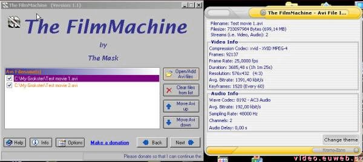
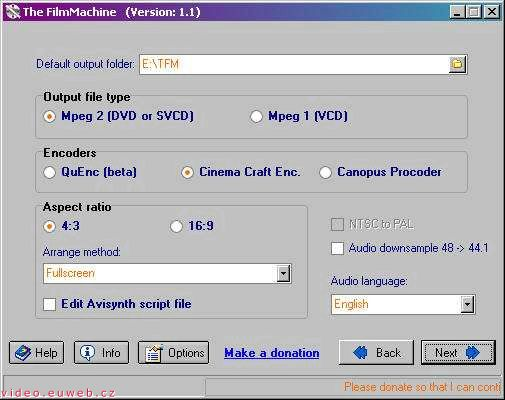
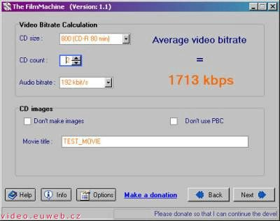
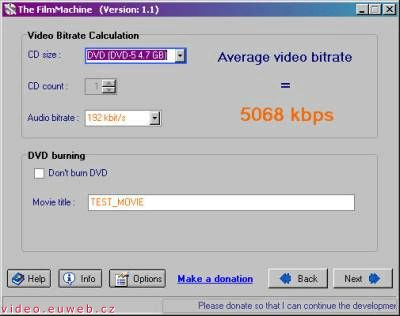
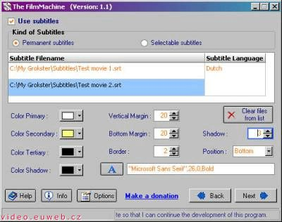
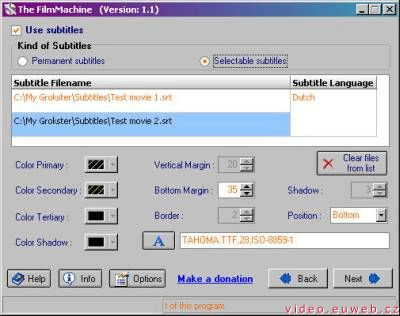
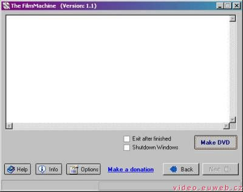
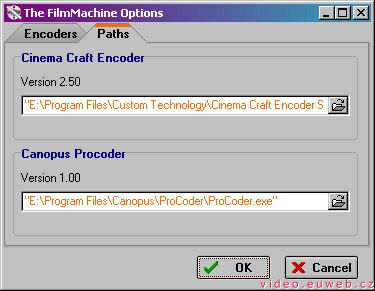
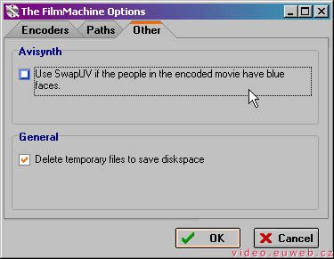

P�eklad ofici�ln� n�pov�dy k programu FilmMachine. Ofici�ln� n�pov�dou je my�len soubor Slo�ka s FilmMachine/Help/The FilmMachine.htm.
M�j p�eklad je hodn� voln�. Je to t�m, �e neum�m anglicky.
V�echno je vlo�eno v bal�ku FilmMachine, pot�ebujete jenom Cinema Craft Enkod�r SP 2.5, 2.66, 2.67 nebo Canopus Procoder pro k�dov�n� videa. Proto�e se jedn� o komer�n� produkty, nejsou v bal�ku obsa�eny. P�ed spu�t�n�m FilmMachine mus�te video kodeky nainstalovat. Program je testov�n na po��ta��ch s Windows 2000/XP.
Napsal jsem The FilmMachine proto�e jsem cht�l p�ev�d�t sv� sta�en� AVI soubory na DVD a (S)VCD bez pou�it� v�ech mo�n�ch program�. Ovl�dal jsem DVD2SVCD a zjistil, �e d�l� svou pr�ci velmi dob�e, ale nem� tolik mo�nost� nastaven�, kolik bych si p��l.To byl d�vod, pro� jsem napsal program, kter� d�l� tuto pr�ci velmi lehkou.
D�le�it� p�ed tvo�en�m DVD nebo (S)VCD ze zdrojov�ho AVI souboru je se ujistit, �e AVI neobsahuje ��dnou chybu nebo synchronn� probl�m. Kdy� neoprav� chyby v AVI souboru, tv�j k�dovan� MPEG bude obsahovat s nejv�t�� pravd�podobnost� synchronn� nebo jin� chyby.
Prioritou p�i pou��v�n� The FilmMachine je m�t AVI soubor zbaven� chyb. M��e� svoje AVI zkontrolovat nap��klad v programu DivFix.
P�edt�m, ne� budete pokra�ovat v pr�ci s The FilmMachine, mus�te otev��t jeden nebo v�ce AVI soubor�. Pokud otev�r�te v�ce AVI soubor�, mus� m�t stejn� vlastnosti (nap��klad v�echny filmy mus� obsahovat zvukovou stopu v AC3). Ihned, jak nahrajete filmy, m��ete se pod�vat na informace o n�m.
Po kliknut� na tla��tko "Next" si m��ete vybrat slo�ku, kam se ulo�� v�mi vytvo�en� DVD nebo (S)VCD.
Dal�� mo�nost� je zvolen� v�stupn�ho form�tu. Vyberte MPEG-2 (DVD nebo SVCD) pro lep�� kvalitu nebo MPEG-1 (VCD) pro ni��� kvalitu.
Nyn� mus�te zvolit video kodek. V sou�asn� dob� m��ete zvolit Quenc 0.51 on NICe (kodek zdarma, je�t� ve v�voji a vlo�en� v bal�ku), Cinema Craft Enkod�r SP versions 2.50 nebo 2.67 a Canopus Procoder.
Te� mus�te zvolit pom�r stran (pod�vejte se na bod 3).
Kdy� v� DVD p�ehr�va� nebo televize um�j� p�ehr�t filmy pouze v norm� PAL, pak zatrhn�te mo�nost NTSC to PAL. (Autor programu z�ejm� nen� z Evropy, kde je standardn� normou PAL. V�dy proto filmy p�ev�d�jte do t�to normy.)
Kdy� chcete sn�it frekvenci zvukov� stopy, m��ete za�krtnout volbu "Audio downsample 48 -> 44.1". M��ete si zvolit jazyk audia, kter� pak uvid�te v DVD menu.
Pro v�b�r pom�ru stran m�te na vybr�n� dv� mo�nosti z�visej�c� na po�adovan�m TV syst�mu (4:3 nebo 16:9). Pot� m��ete vybrat t�i r�zn� nastaven� pro ka�d� pom�r stran.
Prvn� mo�nost� je "Fullscreen", kter� zm�n� velikost na 720x576 nebo 720x480 (nebo jin� rozli�en� jestli�e d�l�te (S)VCD). Tato mo�nost m��e m�t za n�sledek deformaci obrazu.
Druhou mo�nost� je "Add borders, keep aspect ratio", tato metoda p�id�v� horizont�ln� nebo vertik�ln� okraje do obrazu (horizont�ln� pokud je pom�r stran zdroje v�t�� ne� v�sledek, vertik�ln� pokud to tak nen�. V tom p��pad� bude obrazovka videa obklopena r�my.)
T�et� variantou je "Crop video, keep aspect ratio", tato volba o��zne video tak, �e v n�m nebudou ��dn� okraje, ale pom�r stran bude zachov�n. To dovoluje nap��klad ud�lat z pom�ru 16:9 pom�r 4:3 tak, �e se o��zne lev� a prav� ��st obrazu. Jako v televizi
The FilmMachine se bude pokou�et zvolit nejlep�� mo�nost z�visejic� na pom�ru stran vstupn�ho AVI souboru, vy v�ak m�te mo�nost toto nastaven� zm�nit. Nyn� m��ete zm�nit skript Avisynthu jako prvn� ��st konverze, abyste mohli napsat sv� vlastn� nastaven�, ale mus�te v�d�t, co d�l�te. (Nech�pu, co to znamen�!)
V tomto okn� m��ete zvolit velikost va�eho CD nebo DVD a po�et CD, na kter� chcete vyp�lit v�sledek. Norm�ln� se pou��v� 1 nebo v�ce CD na VCD a 2 nebo v�c CD na SVCD. Nyn� m��ete zvolit datov� tok audia tak, aby to zvl�dla The FilmMachine.
Pokud nechcete vytvo�it obraz CD z enk�dovan�ho filmu, zvolte za�krt�v�tko "Don't make images" .
Kdy� zvol�te mo�nost DVD:
The FilmMachine um� vlo�it titulky natvrdo do filmu a vyp�nateln� titulky (pouze pro DVD) do va�ich DVD nebo (S)VCD film�. M��ete vlo�it titulky v n�sledujc�ch form�tech: *.srt a *.sub. M��ete zvolit stejn� po�et titulk�, jako jste zvolili AVI soubor�, The FilmMachine spoj� titulky dohromady, jestli�e zvol�te v�ce ne� jeden soubor s titulky.
 Na t�to obrazovce m��ete spustit konverzi a d�vat se, co The FilmMachine pr�v� d�l�. Proces bude trvat n�jak� ten �as, tak�e je nejlep�� ho spustit a j�t se vyspat.
Kdy� The FilmMaschine dod�l� konverzi na (S)VCD, mus�te naj�t slo�ku "images" ve slo�ce v�stupn�ho souboru. V t�to slo�ce jsou soubory "*.bin" a "*.cue". Tyto soubory vypalte na CD nap��klad Nerem.
Kdy� zvol�te DVD jako velikost CD, bude m�dium vyp�leno automaticky (Nero mus� b�t nainstalovan�). P�ed p�len�m mus�te vlo�it DVD-R(W) do DVD vypalova�ky.
N�kter� mo�nosti m��ete zm�nit v nastaven�, jsou to:
Mus�te taky nastavit, kam se m� ulo�it hotov� video.
M��ete zm�nit je�t� n�kter� dal�� nastaven�.
Video na PC: Vytvo�eno v roce 2005 a v�c. Autorem je Jan '�laha' �lahora. Ve�ker� pr�va vyhrazena autor�m �l�nk�. Pokud nen� uvedeno jinak, jsem to j�.
{kind=link}
{kind=link}
{kind=link}
{kind=link}
{kind=link}
{kind=link}